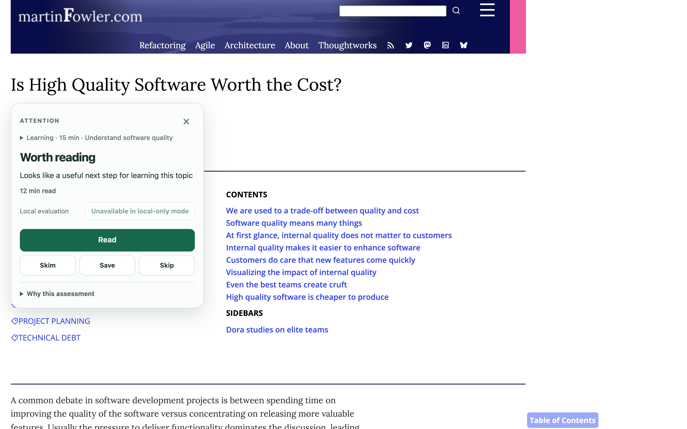

A reading companion for Chrome
Interesting.
But worth
your time?
The next article can wait a second. Attention considers your goal, your time, and what you already know—then helps you choose what to read.
Free prototype. No account. Local evaluation.
martinfowler.com
Is High Quality Software
Worth the Cost?

Article by Martin Fowler · Local evaluation
Good reading starts with a choice.
Four choices.
You have the last word.
Give a good fit your full attention.
See the recommendation, the reason, and the reading time together. Then decide whether to dive in.
“Useful” is
personal.
The same article.
A different moment.
Learning something new? Solving a problem? Just exploring? What deserves your attention depends on what you need today.
-
01
Tell it what matters now.
Choose your scenario and available time. Add a topic if you have one. Change your context on the card to get an updated recommendation.
-
02
Find what adds something.
Preview links while browsing, or open an article for a fuller assessment. Use your profile and optional knowledge sources to help distinguish familiar ideas from new ones.
-
03
Tell it when it gets things wrong.
Was the article worth it? Your voluntary feedback helps calibrate future estimates locally. A recommendation is a starting point; you make the decision.
03 / A moment in practice
From
maybe
to a decision.
One article, a 15-minute budget, and something worth saving for later.
00:40 EN audio · EN / RU subtitlesThe real Attention interface, from opening a card to saving an article.
Open video
Your reading life.
Kept close.
Ordinary evaluation happens in your browser. Your saved profile, reading memory and feedback stay in a local vault, encrypted with a password you choose. No Attention account. No built-in analytics.
External AI is optional and needs your own API key. When you request AI analysis or use a connected service, relevant data goes to that provider. You can lock or erase your local vault.
A note from the maker
“An article can be good and still not be what you need right now. That’s the idea I’m building Attention around.”
Aleksey Voloschuk — creator of Attention
This is an early version, shaped by real reading and honest feedback. If a recommendation misses the mark, I’d like to hear about it.
Tell me what worked. Or didn’t.A little less noise. A little more room.
Make your
next read
count.
Download for Chrome
Free prototype · v0.23.0 · Manual installation
A few steps, then it’s yours.
-
01
Download & unzip.
Save the extension above and extract the ZIP.
-
02
Add it to Chrome.
Open
chrome://extensions, switch on Developer mode, then choose Load unpacked and select the extracted folder. -
03
Bring your first article.
Pin Attention, open an article and click the extension icon. Create your local vault, choose your scenario, and see your first assessment.
At your keyboard: Tab to the Attention button beside an article title, then Enter to open. Escape to close.